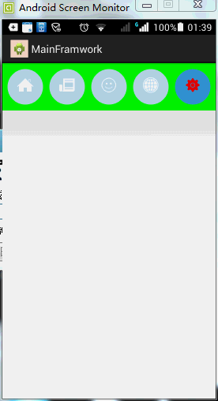

ListView,viewpager中的gridview设置margin等属性无效,或者是设置item的高度无效
百度地图获取市的坐标的接口
http://my.oschina.net/xiaogg/blog/298226
百度地图根据市名获取该市所在的坐标，使用百度地图的GeoCoder必须要输入市名和一个具体的地址，我现在只想输入市名
获取到该市的坐标
为什么会产生滑动冲突？在android事件的传递机制是由外到内的，如果内部控件消费了事件的情况下
外部控件是不会去处理事件的，这样为什么还会产生滑动冲突呢？
事件冲突的产生原因就是，应该是外部控件消费的事件但是被内部控件消费了，产生了不是我们想要的效果，其中必须要知道的是，内部事件的消费，可能是内部事件中的某一个控件具有消费能力。
滑动冲突的，原理分析
先来介绍三个方法
1，public boolean dispatchTouchEvent(MotionEvent ev)
Touch事件发生时Activity的dispatchTouchEvent(MotionEvent ev)方法会将事件传递给最外层View的dispatchTouchEvent(MotionEvent ev)方法，该方法对事件进行分发。分发逻辑如下：
如果return true，事件会由当前View的dispatchTouchEvent方法进行消费，同时事件会停止向下传递；
如果return false，事件分发分为两种情况：
如果当前 View 获取的事件直接来自 Activity，则会将事件返回给Activity的onTouchEvent进行消费；
如果当前 View 获取的事件来自外层父控件，则会将事件返回给父View的onTouchEvent进行消费。
如果return super.dispatchTouchEvent(ev)，事件会自动的分发给当前View的onInterceptTouchEvent方法。
2，public boolean onInterceptTouchEvent(MotionEvent ev)
上面已经提到，如果在dispatchTouchEvent返回super.dispatchTouchEvent(ev)，那么事件将会传递到onInterceptTouchEvent方法，该方法对事件进行拦截。拦截逻辑如下：
如果return true，则表示拦截该事件，并将事件传递给当前View的onTouchEvent方法；
如果return false，则表示不拦截该事件，并将该事件交由子View的dispatchTouchEvent方法进行事件分发，重复上述过程；
如果return super.onInterceptTouchEvent(ev)，默认表示拦截该事件，并将事件传递给当前View的onTouchEvent方法，和return true一样。
3，public boolean onTouchEvent(MotionEvent ev)
上面已经提到，在dispatchTouchEvent（事件分发）返回 super.dispatchTouchEvent(ev)并且onInterceptTouchEvent（事件拦截返回true或 super.onInterceptTouchEvent(ev)的情况下，那么事件会传递到onTouchEvent方法，该方法对事件进行响应。响应 逻辑如下：
如果return true，则表示响应并消费该事件；
如 果return fasle，则表示不响应事件，那么该事件将会不断向上层View的onTouchEvent方法传递，直到某个View的onTouchEvent方法 返回true，如果到了最顶层View还是返回false，那么认为该事件不消耗，则在同一个事件系列中，当前View无法再次接收到事件，该事件会交由 Activity的onTouchEvent进行处理；
如果return super.dispatchTouchEvent(ev)，则表示不响应事件，结果与return false一样。
这里也顺便说一下，如果一个View同时监听了onTouch事件和onClick事件，则在onTouchEvent里面应该返回false，否则点击事件就无法监听到。后面会提到这一点。
以上三个方法的关系
public boolean dispatchTouchEvent(MotionEvent ev){
boolean consume = false;
if(onInterceptTouchEvent(ev)){
// 如果onInterceptTouchEvent返回true
// 则交由该View的onTouchEvent方法
consume = onTouchEvent(ev);
} else {
consume = child. dispatchTouchEvent(ev); // 否则交由子View的dispatchTouchEvent事件进行分发
}
return consume; // 如果成功消费该事件，则返回true，然后停止传递，否则返回false
}
滑动事件的传递规则
（1）当一个点击事件产生后，它的传递过程遵循的规则如下：Activity->Window->View。顶级View接收到事件之后，就 会按相应规则去分发事件。如果一个View的onTouchEvent方法返回false，那么将会交给父容器的onTouchEvent方法进行处理， 逐级往上，如果所有的View都不处理该事件，则交由Activity的onTouchEvent进行处理，就跟工作中遇到了难题，逐级找领导解决一个道 理，领导解决不了，再找上一级领导。
（2）正常情况下，一个事件序列只能被一个View拦截且消耗，某个View一旦进行事件拦截，那么这一个事件序列都只能交由他处理，并且 onInterceptTouchEvent也不会被再次调用，因此，正常情况下一个事件是不能交给两个View来处理的，当然，特殊做法就是在View 的onTouchEvent，处理完之后再返回false，强行交给其他View处理。
（3）如果某一个View开始处理事件，如果他不消耗ACTION_DOWN事件（也就是onTouchEvent返回false），则同一事件序列比如 接下来进行ACTION_MOVE，则不会再交给该View处理，就像工作中做一件事情，你要嘛做完，要嘛你就不要做这件事了。
（4）在Android中，ViewGroup默认返回false，即不拦截任何事件。
（5）诸如TextView、ImageView这些不作为容器的View，一旦接受到事件，就调用onTouchEvent方法，它们本身没有 onInterceptTouchEvent方法。正常情况下，它们都会消耗事件（返回true），除非它们是不可点击的（clickable和 longClickable都为false），那么就会交由父容器的onTouchEvent处理。
（6）View的enable属性不影响onTouchEvent的默认返回值，只要它clickable或者longClickable为true，则onTouchEvent就会返回true。
（7）点击事件分发过程如下 dispatchTouchEvent—->OnTouchListener的onTouch方法— ->onTouchEvent-->OnClickListener的onClick方法。也就是说，我们平时调用的 setOnClickListener，优先级是最低的，所以，onTouchEvent或OnTouchListener的onTouch方法如果返回 true，则不响应onClick方法
滑动冲突的解决方案
方案1：采用外部拦截法
@Override
public boolean onInterceptTouchEvent(MotionEvent ev) {
boolean intercepted = false;
int x = (int) ev.getX();
int y = (int) ev.getY();
switch (ev.getAction()) {
case MotionEvent.ACTION_DOWN:
intercepted = false;
break;
case MotionEvent.ACTION_MOVE:
int dx = x - mLastXIntercept;
int dy = y - mLastYIntercept;
if(父容器需要当前点击事件的判断条件){
intercepted = true;
}else{
intercepted = false;
}
break;
case MotionEvent.ACTION_UP:
intercepted = false;
break;
default:
break;
}
mLastXIntercept = x;
mLastYIntercept = y;
return intercepted;
}
android中的布局参数
名称不已layout_开头的属性作用于组件，组件生成时确定自己孩子摆放的位置
名称已layout_开头的属性作用于组件，组件生成时告诉父控件，自己摆放的位置
APP研发录读书笔记
android模块化开发和插件化开发
要做到模块化开发和插件化开发可以
第一步：建立AndroidLib类库，将与业务无关的逻辑转移到AndroidLib。
给RadioButton设置圆角的背景选择器，效果图如下所示：

自定义类似于QQ图片上传的效果
有两种的方式，自一种自定义ProcessImageView
第二种设置两张图片叠加在一起，控制一张图片的显示高度